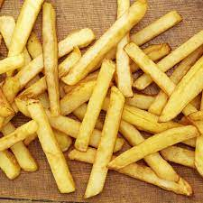

Cómo preparar Papas Fritas en 9 simples pasos
Las Papas Fritas son una comida increible, para chuparse los dedos del pié.

Papas Fritas poco comunes
La receta de papas fritas es una de las más ricas del mundo.
Pero con estos pasos a continuación, nada puede follar.
Ingredientes
Paso a paso
- Pelar las papas
- Cortar en bastones
- Calentar el aceite a 160 grados
- Colocar las papas en el aceite
- Cuando esten del color deseado, sacar las papas
- Secar en rejilla de alambre bien aireadas o en papel de cualquier cosa
- Salar
- Disfrutar